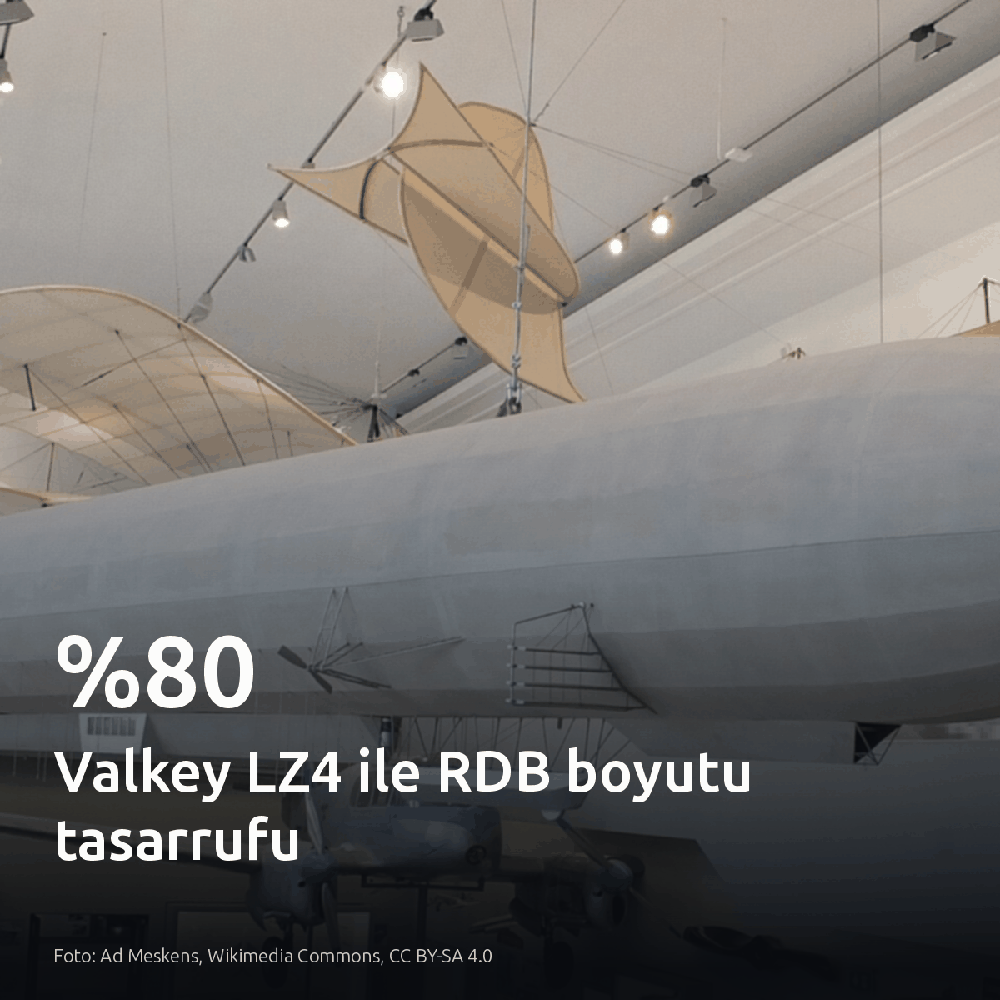
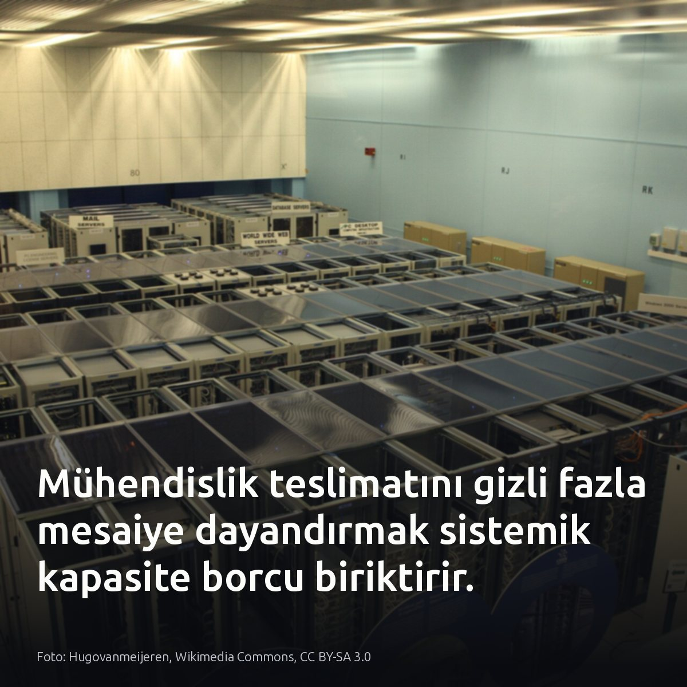
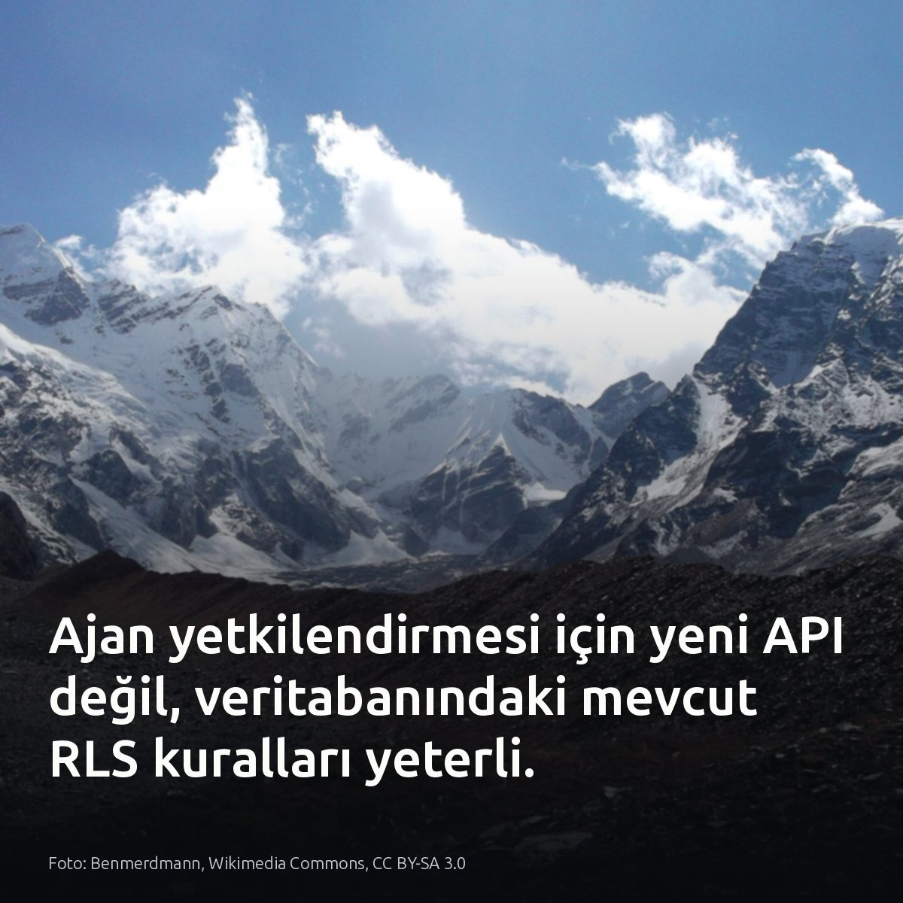
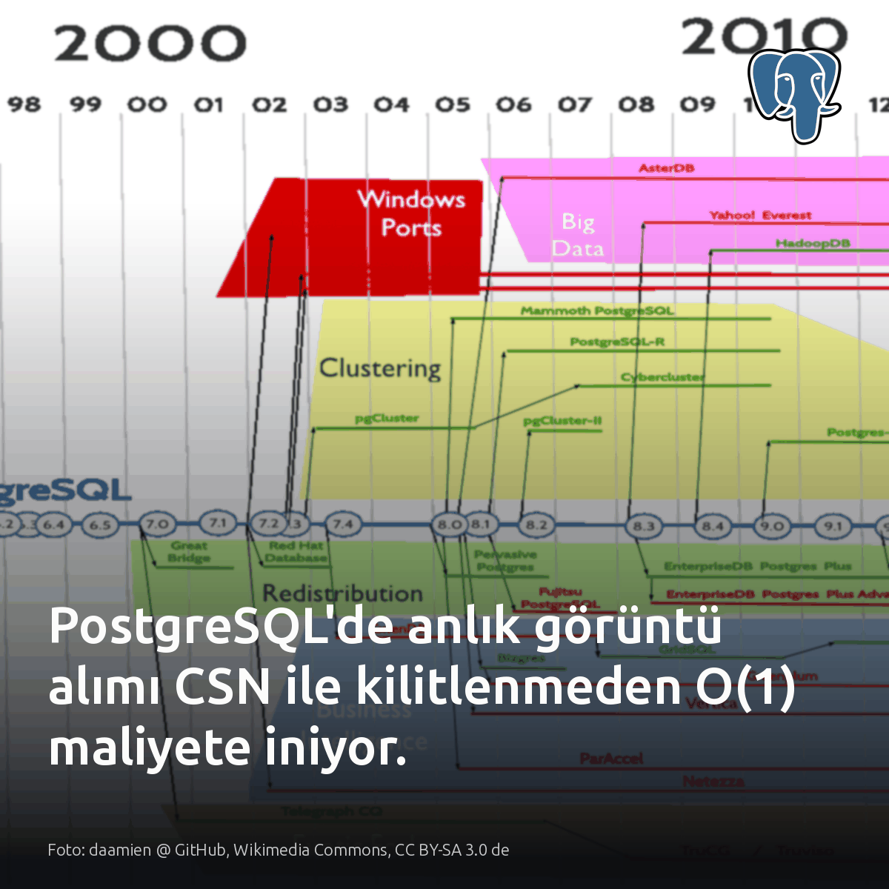
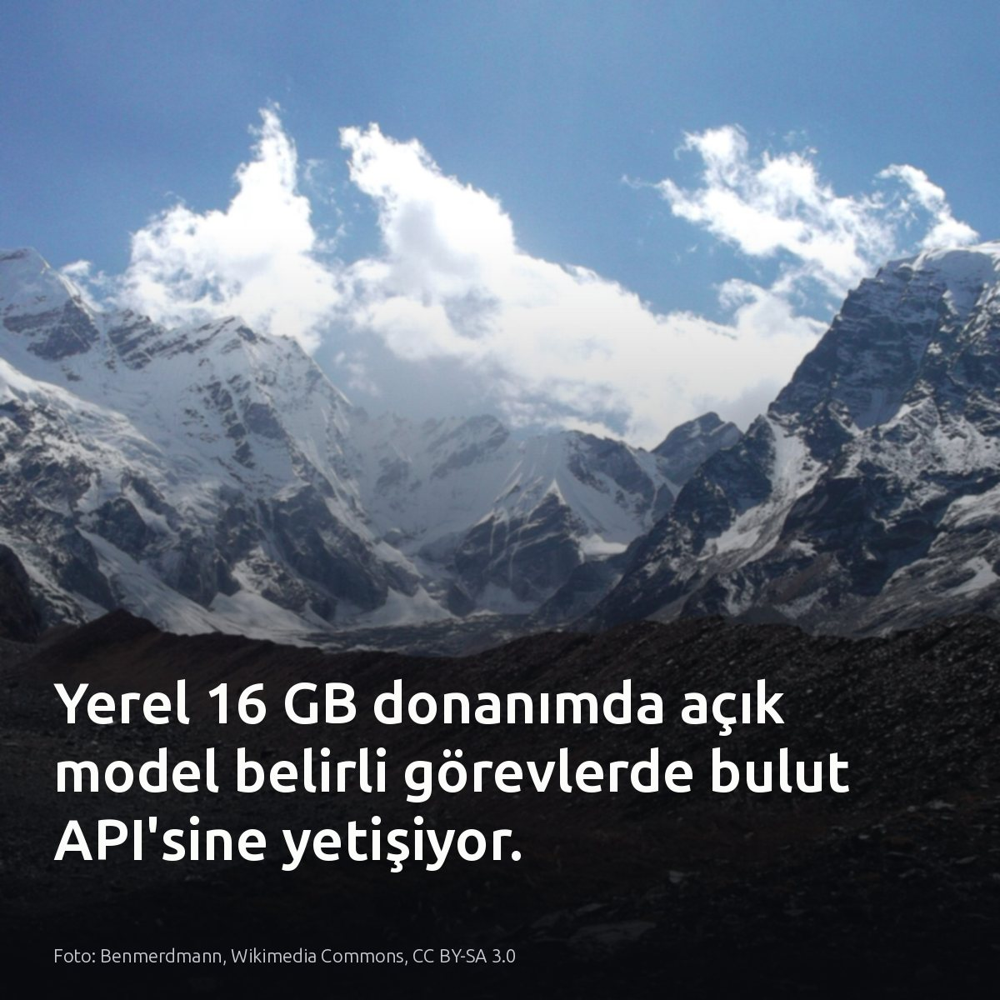

Metni kopyala, kartı indir, LinkedIn'de yapıştır. Bağlantılar gönderiye değil ilk yoruma.

Valkey 9.2'deki LZ4 akış sıkıştırması, 1 milyon satırlık RDB yedeğini 178 MB'tan 35 MB'a indirdi (%80). Varsayılan LZF sadece %1,5 kazandırıyordu. Bu küçülme, snapshot sırasındaki disk IOPS darboğazını ve replika aktarım sürelerini doğrudan rahatlatıyor. #valkey #database #devopsKartı indir
İnceleme ve test verilerinin kaynağı: dev.to veritabanı / Alex Georgiev: https://dev.to/alexgeorgiev17/valkey-92s-new-rdbcompression-lz4-setting-cuts-a-1m-row-rdb-from-178mb-to-35mb-1cje

En kıdemli mühendis saat 17:00'de çıktığında teslimat aksıyorsa, sorun performans değil kapasite açığıdır. Hata mühendiste değil, takvimdedir. İş planları sessizce bir kişinin mesai dışı desteğine bağlandığında, o kişi sınır çizdiği an tüm taahhütler çöker. Darboğazı görmek için sprint hızına değil, mesai sonrası atılan acil commit'lere bakın. Bu durum, teslimat gecikmesinin doğrudan bireysel yetkinlik eksikliğinden kaynaklandığı senaryolarda geçerli değildir. #engineeringmanagement #devops #kapasiteplanlamaKartı indir
Kaynaklar ve okuma bağlantıları: • Görsel kaynağı: Hugovanmeijeren, Wikimedia Commons, CC BY-SA 3.0 • [S1], [S2] Python in Plain English: https://python.plainenglish.io/our-best-engineer-started-leaving-at-5-we-called-it-a-performance-problem-e8ece7f5099d

Yapay zekâ ajanlarına veritabanı açmak için yeni bir API katmanı yazmanız gerektiği inanışı bitti. Supabase'in sunduğu MCP sunucusuyla her araç çağrısı artık doğrudan oturum açan kullanıcının kimliğiyle çalışıyor. Service role anahtarı gerekmiyor. Ajanın çalıştırdığı her sorgu doğrudan tablodaki mevcut RLS kurallarına takılıyor. Yetki sınırını uygulama kodunda yeniden üretmek yerine veritabanı motoruna bırakmak operasyonel karmaşayı bitiriyor. #postgresql #supabase #mcpKartı indir
Kaynaklar ve detaylar: • Supabase MCP duyurusu: https://supabase.com/blog/give-your-supabase-app-its-own-mcp-server • Görsel: Benmerdmann, Wikimedia Commons, CC BY-SA 3.0

PostgreSQL'de yüzlerce eşzamanlı işlem varken anlık görüntü maliyetini O(1) seviyesine çekmek mümkün. GetSnapshotData() fonksiyonu, aktif süreçleri listelemek için paylaşılan ProcArray dizisini küresel ProcArrayLock altında baştan sona tarar. Kilit tek noktada sıralama dayatır. Eşzamanlı bağlantılar arttıkça kilit çekişmesi ve bekleme süresi katlanarak artar. Maliyet okunan veriden değil, o anki aktif işlem sayısından doğar. Yüksek OLTP yüklerinde bu kilitlenme verim tavanı yaratır. Commit Sequence Number mimarisi, aktif işlem listesini kilit altında kopyalama zorunluluğunu kaldırıyor. Her commit işlemine monoton artan sıra numarası atandığında, görünürlük tespiti dizi taramasından çıkıp atomik bir tamsayı okumasına dönüşüyor. #postgresql #databaseinternals #mvccKartı indir
Görsel ve kaynak detayları: - Görsel kaynağı: daamien @ GitHub, Wikimedia Commons, CC BY-SA 3.0 de - Vadim Yatsenko, Commit Sequence Number (CSN) MVCC: Lock-Free Snapshot Acquisition: https://postgr.es/p/9zX

16 GB RAM'li yerel model, belge ayrıştırmada GPT doğruluğunun üçte ikisine ulaştı. Apple MLX üzerinde 4 bit çalışan Clef-flash kural tabanına 10,1 puan eklerken, GPT 15,3 puan getirdi. Aralarındaki fark 5,2 puan. Veri sızıntısı ve API masrafı istemeyen dahili boru hatlarında yerel modeli, mutlak doğruluk aranan kritik işlerde bulut API'sini seçin. Boru hattınızdaki ayrıştırma kuyruğunun hata toleransına bakın. #localllm #dataengineering #opensourceKartı indir
Görsel kaynağı: Benmerdmann, Wikimedia Commons, CC BY-SA 3.0 Kaynak ve test detayları: [S1]-[S6] https://medium.com/@abhyankarharshal22/a-free-local-ai-got-me-two-thirds-of-the-way-to-gpt-df074847c7f4?source=rss------large_language_models-5